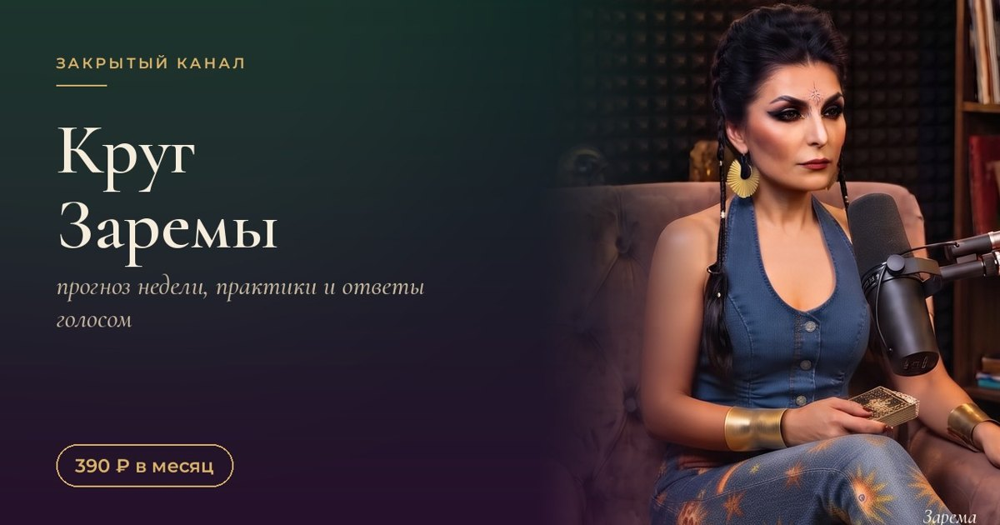
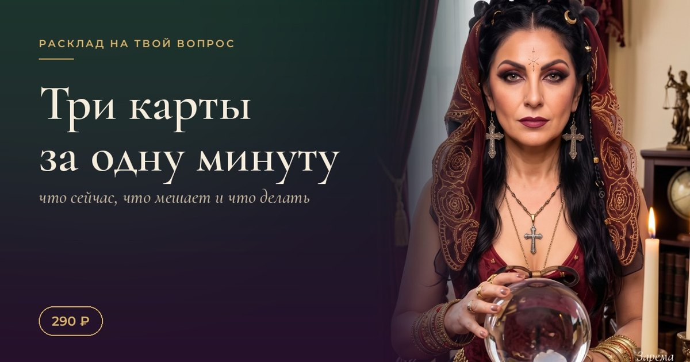
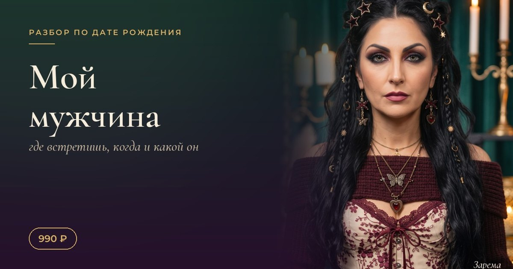
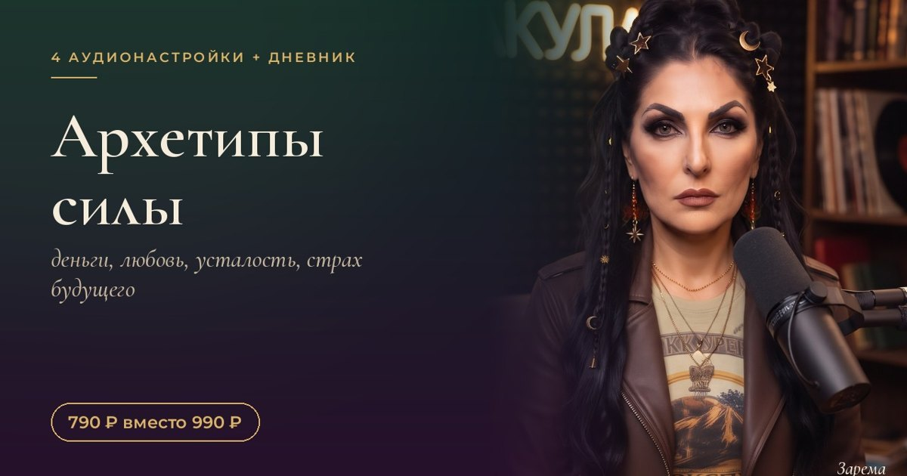

Круг Заремы: закрытый канал для своих, где я говорю больше, чем в открытом
Подписка 390 ₽ / мес · Оплатить →
В открытом канале я пишу для всех. В Круге я пишу для своих.
Там тише, ближе и глубже. Нет погони за охватами, нет постов «для алгоритма». Есть девочки, которые хотят не просто читать про карты, а жить с ними каждую неделю.
Что внутри
- Прогноз недели по стихиям. Огонь, земля, воздух, вода. Каждый понедельник: на что опираться, где поберечь силы, какой день лучше для важного.
- Аудиопрактики на 5 минут. Короткие настройки, которых нет в открытом доступе. Слушаешь утром или перед сном.
- Ответы голосом. Раз в месяц собираю ваши вопросы и отвечаю голосом. Можно спросить то, что не хочется писать в открытых комментариях.
Чем Круг отличается от открытого канала
Открытый канал это ежедневные посты: карты, знаки, ритуалы. Читать может каждая.
Круг это меньше людей и больше личного. Практики, которые я не выкладываю публично. Прогнозы с советами, а не просто «неделя будет интересной». И возможность спросить меня напрямую.
Как вступить
- Нажимаешь «Оплатить» внизу, откроется мой бот в Telegram.
- Оплачиваешь 390 ₽ через Продамус и нажимаешь «Я оплатила».
- Бот присылает личную ссылку-приглашение в закрытый канал.
Ссылка одноразовая и только для тебя, поэтому в Круге всегда свои.
Кому подойдёт
- если ты уже читаешь мой открытый канал и хочется больше;
- если тебе нравится ритм: каждую неделю прогноз, каждую неделю практика;
- если хочется задать вопрос, но не при всех.
Кому не подойдёт
- если нужен личный разбор твоей ситуации: Круг общий для всех участниц. Для личного есть разбор голосом;
- если ждёшь ежедневных персональных предсказаний. Прогнозы в Круге по стихиям, а не на каждую лично.
Частые вопросы
Можно отменить?
Да, в любой момент. Подписка продлевается автоматически раз в месяц, после отмены доступ остаётся до конца оплаченного месяца.
Как отменить?
Напиши мне в Telegram, я помогу отключить продление.
Можно читать с телефона?
Да, это обычный канал в Telegram.
Я пропустила неделю. Посты останутся?
Да, все прогнозы и практики остаются в канале, можно вернуться к ним в любой момент.
Другие форматы

Расклад на один вопрос
Три карты на твой вопрос: что сейчас, что мешает, что делать. Ответ в Telegram.
290 ₽Подробнее →
Разбор «Мой мужчина»
Где встреча, какой он, что мешает и три шага на месяц. PDF и голосовое.
990 ₽Подробнее →
«Архетипы силы»
4 аудионастройки по 10–15 минут и дневник на 7 дней. Начни со своего аркана.
990 ₽Подробнее →